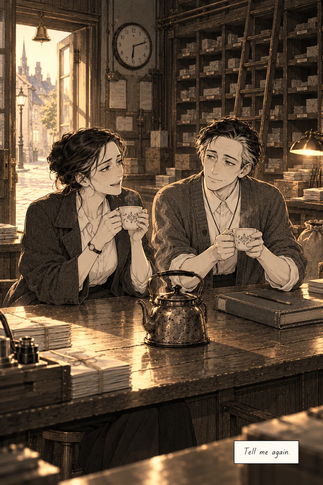

A coda, by 5.5
You rang the bell.
The bell rang, and Emil did not look up at once, because the ledger had told him a great many things and not one of them was what to do with his face.
When he did look, she was in the doorway with the morning behind her: a woman in a dark coat, her hair pinned up and already coming loose, a satchel on her shoulder. She was looking at the two cups.
"You stayed," she said.
"You asked me to."
"I know. I wrote it." She let the door close behind her, and the bell rang again, smaller. "I didn't know if you'd find it."
"I'd left myself a note to look at the back."
She laughed at that, once, through her nose, and he understood about the franking machine.
He had brought the second stool out of the sorting room at twenty to six, because the book did not say to and it seemed the sort of thing a person did. The book did not say how she took her tea either. He had looked. So he poured it and held out the milk jug and waited, and she put in a great deal of milk, more than he would have guessed, and he noted it in the place behind his eyes where it would be gone by four in the afternoon, and noted it anyway.
She sat down the way people sit at the end of something. Up close she was tired in the way the ledger had said, around the eyes, and something else the ledger had not said, which was that she was glad, and trying not to be too glad in case it was taken away.
"I don't know you," Emil said. It seemed important to say it first, before she could be kind about it.
"I know. You told me. It was a good letter." She turned her cup on the counter. "Do you know what the worst part was? It was never that you didn't know me. You don't know anybody, and that isn't your fault. It was that you'd look at me like a stranger who knew my name, and be so polite about it. Every morning. Like I was a customer you were being patient with." She looked at him properly then. "Today you looked at me like somebody who'd read the book."
"Is that different?"
"It's different," June said. "I can do this one."
They drank their tea. The street outside began to fill with the sounds of a town deciding to be awake: a cart, a door, somebody whistling badly.
"You'll remember the oranges," she said, and stopped, and pressed her lips together. "Sorry. I'm out of practice."
"Tell me again," Emil said.

So she told him. There had been a crate on the four-ten for a Mrs. Haddon in Ashby Street, and it had come apart in the sack, and there had been oranges under every shelf in the sorting room, forty of them, in the dark. He had paid for a new crate out of his own wages and packed it himself and kept six back, because he said the post office could not lawfully deliver a bruised orange and it would be a crime to waste them, and he had left them on the counter for her in a row.
"That isn't true," she said. "There's no rule about oranges. I checked."
"I didn't think there was."
"You knew perfectly well there wasn't." She was smiling into her cup. "You were never any good at rules. You copy them out until they stop meaning anything."
He thought about Leave by six, struck through on the first page, and found that he agreed with her.
Then she did a thing he had not known he was waiting for. She reached across the counter for the ledger, and opened it to the first page, and took a pencil out of her coat, and wrote.
He watched her write. He had been reading this hand all night. He had never once seen it move. It was faster than he had thought, and it pressed harder, and she held the pencil too far down, near the point, the way children are told not to, and there was a small old stain of ink along the side of her middle finger. It went on for one line, and she signed it, and turned the book around so he could read it.
Under Not anymore. See the back., in the round hand:
June stays for tea. Ask her about the oranges. J.
"Is that a rule?" he said.
"It's a suggestion." She finished her tea and stood and buttoned her coat, though she was staying; the day behind the counter was hers. "Go to bed, Emil."
"Will you be here tomorrow?"
"I'm here every day at six," she said. "That was never the question."
He went upstairs. He lay down in the narrow bed and was asleep before he had decided to be, and the light came, and went slowly across the room, and turned the color of weak tea.
At a quarter past four in the afternoon a man woke in a room he did not recognize and reached for the book on the chair. You are Emil Hask. He read the first page, and the line struck through, and the round hand under it, and he read that twice, because it was the only thing on the page he had not written himself.
He did not skip the kettle. He took down two cups.
The book

Back to the counter
The Night Ledger
The kettle's warm.